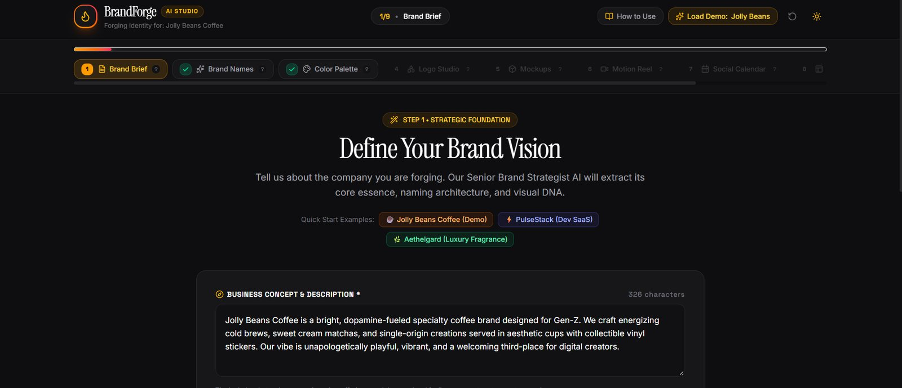
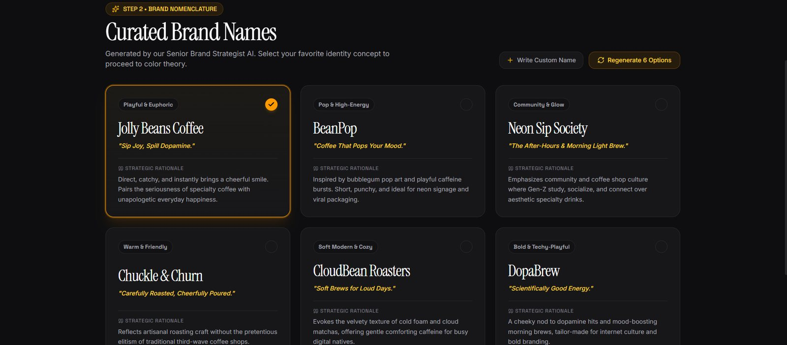
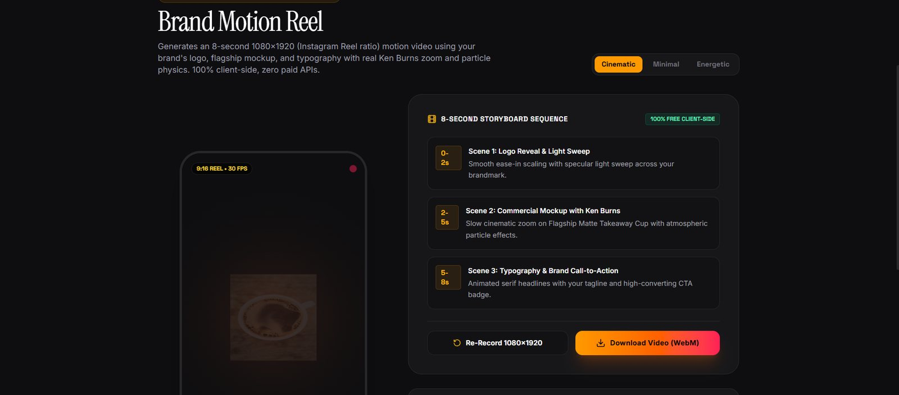

AI brand strategist
6 name options with tagline and rationale, plus regenerate and custom name entry.
AI Project · Case Study
From business idea to complete brand kit in minutes, powered by free-tier AI.

The problem
Building a brand identity (name, logo, colors, mockups, social content) traditionally takes weeks and costs thousands at an agency. Startup founders and small local businesses often can't afford that.
Designers lose hours on repetitive ideation and mockups instead of creative work.
The original course workflow for this project needed 6+ separate tools. Each step meant switching tools and copying outputs by hand.
The solution
A user writes a short brief, and the app generates every brand asset in sequence, then bundles everything into a downloadable kit.
Business description, industry, audience, personality chips, region, keywords (with demo presets).

Gemini acts as a senior brand strategist and suggests 6 names, each with a tagline and rationale.
A 5-color system (Primary, Secondary, Accent, Background, Text) with lock/regenerate and live WCAG contrast checks.
Minimalist, mascot and wordmark concepts, plus conversational editing ("make the mascot smile wider").
Cup, tote bag, apron, Instagram post and storefront sign in a bento gallery with lightbox and downloads.

An 8-second 1080×1920 reel rendered in the browser from the brand's own assets.
Instagram posts with captions, hashtags, posting times and CSV export.
A responsive one-page site in the brand's colors, with desktop/mobile toggle.
Everything in one place, with PDF guidelines and a ZIP of all assets.
My process
The same approach I use for every AI project: Learn → Explore → Experiment → Build → Analyze → Apply.
Studied the course workflow, which used 6+ separate AI tools for one brand kit.
Researched whether Google AI Studio could replace the whole tool stack inside one app.
Designed structured prompts (role-based, JSON outputs) and tested them across different brand types.
Built the app iteratively in AI Studio Build mode, a few steps at a time, fixing one issue per prompt.
Tested with multiple brands and found the weak spots: misspelled logo text, paid-only video, free-tier quota errors.
Re-engineered it to run 100% on free resources with fallbacks, a prompt engineering layer and a browser-based motion reel.
Key features
6 name options with tagline and rationale, plus regenerate and custom name entry.
Lock colors you like, regenerate the rest, live WCAG accessibility badges.
Three logo styles and conversational edits in plain English.
Five real-world touchpoints with a source badge (AI Generated / AI Backup / Rendered Mockup).
14 days of Instagram posts with captions, hashtags, posting times and CSV export.
PDF guidelines and a ZIP with logo SVG, palette CSS, guidelines JSON, calendar CSV and all 5 mockups.
Challenges & solutions
Free-tier AI fails in many small ways. Most of the work was designing around those failures.
01AI image models misspell brand names inside logos
Split the logo: AI generates only the icon, and the brand name is rendered as exact SVG typography.
02AI video (Veo) needs paid billing
Built a free Motion Reel engine in the browser with HTML Canvas + MediaRecorder.
03Free-tier quota and rate limits break the app
A free-tier guard catches 429/quota errors, shows a friendly message and switches to a backup automatically.
04Image generation can fail at any time
A 3-tier cascade: Gemini → Pollinations.ai → rendered SVG mockups, with a badge showing the source.
05Generic, low-quality AI images
A prompt engineering layer turns brand data into structured, photography-style prompts with explicit things to avoid.
06Repeated calls waste the free quota
Client-side rate limiting (one image request every ~2.5 s) and caching of generated results.
07Gemini sometimes returned messy JSON or hung, crashing generation
A safe JSON parser plus a 25-second timeout. If AI doesn't respond, a template is shown with a clear "Template fallback" badge and a Retry with AI button, never passed off as AI output.
08Demo (coffee) content leaked into other brands
Removed all hardcoded copy and reset later steps whenever the brand changes; tested with a coffee brand and a SaaS brand.
09Downloads of remote images opened a new tab instead of saving, and blanked the Motion Reel
Images are fetched as blobs, and a server proxy locked to Pollinations.ai only (HTTPS, image types, 10 MB limit) keeps the canvas working securely.
10Exported files were incomplete or broken in Excel
The ZIP now includes all 5 mockups and a README; CSV exports carry a UTF-8 BOM so emojis display correctly.
Architecture
Text runs on the Gemini free tier; images try three sources in order.
↓ image prompts
↓ first image that succeeds
Results
The same app, two unrelated industries: proof that the output is generated, not hardcoded.
Brand kit 1
Gen-Z coffee brand
Logo, 5-color palette, coffee cup and tote bag mockups.
Brand kit 2
Developer SaaS brand · a completely different industry
Logo, 5-color palette, Instagram post and signboard mockups.
A brand kit that would take weeks across 6+ tools is produced in one app, in minutes, at ₹0 running cost.
What I learned
What's next